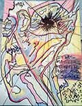
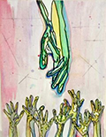

Jack-Eye Johnny blew into town, riding the solar wind straight in from the event horizon. Nobody remembers exactly when he showed up. Fact is, nobody remembers him actually arriving. He was just not there and then he was there and I swear t’god you couldn’t remember what it was like before.
From then on, nothing happened — what I mean to say is nothing that meant anything — that didn’t have Johnny’s stardust all over it. You’d hear someone say yeah Johnny was there or yeah Johnny had this thing going or yeah didn’t you hear Johnny this or Johnny that. He could be across town or twenty miles away or a hundred, didn’t matter. If ever there was a dude who made you sho’ nuff believe in spooky-action-at-a-distance, it was Jack-Eye Johnny.

And didn’t we all feel chosen, didn’t we all feel like the righteous fucking hand o’god reached down and lifted us up to the very crown o’ the universe when Johnny smiled and laughed, slid up and slipped his arms around our shoulders and said come on, let’s light this joint up tonight.
If, to give you a very perfect example of how it was, a guy was to be downtown and see his girlfriend ride by in Johnny’s car…if a guy was to hear that his girlfriend was sleeping in Johnny’s bed, man, that guy was golden. If that guy had the most excellent discerning taste to be going with a girl that Johnny found worthy of his attention, well then…‘nuff said. And once it was over — because it always was — she’d come back to that guy better than ever. Her skin would feel like honey and sparkle like fireflies. She’d move like a goddess and glow like the perfect setting sun on the first day of creation.
Everybody had their own favorite Johnny story. I never did, tho’. I mean, at the time, why tell stories when the real thing was just around the corner. Why try and parse the hidden meaning of the fucking universe. Just look over there, pal. Just look over your shoulder. Or don’t even. Just wait a minute and the perfection of Johnny’s aura will pour down upon you. And then, once it was over, once he was gone, I didn’t ever want to think about it again.
Thing about Johnny, he wasn’t easy to pin down. About anything. It was as if he seemed to slide through this plane of existence in a neutral state — move through matter like a puff of smoke through a goddam screen door. That’s why it was all the more surprising, when push came to shove, that he took a stand…
‘Course, looking back, how could you not know? How could you be drawn into his orbit and not sense that sooner or later — and probably sooner — he’d go supernova. Jack-Eye Johnny had an expiry date stamped clear as day across his back; all you had to do was look closely to see it. But until then, the universe could expand as fast and as far as it liked and we didn’t care.
Everybody loved Johnny and Johnny loved everybody. We all said it. And we believed it. Tho’ honestly if you stopped to think about it in a logical manner — but who would because why would you want to — you’d pretty soon run up against the inconvenient truth that just the mere existence of Johnny pissed a whole lot of people off. Okay, not pissed off exactly, but let’s say threw out of balance. Okay, not people exactly, but let’s say some forces that are better left unmolested in the grand scheme o’ things. Really, when you come right down to it, in the cold, hard light o’ day, it was matter-antimatter, pure and simple. And we all know how that ends.
Artwork courtesy of David Walls.